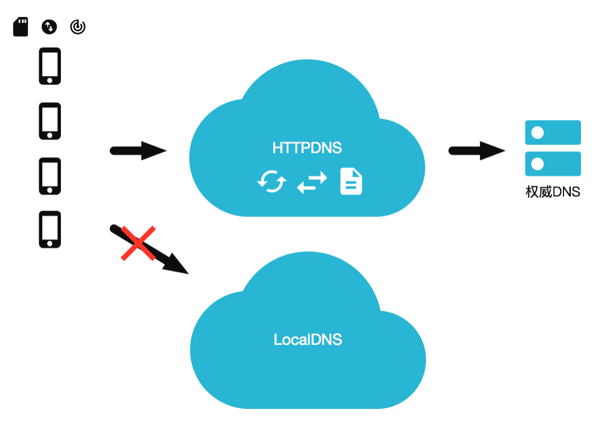
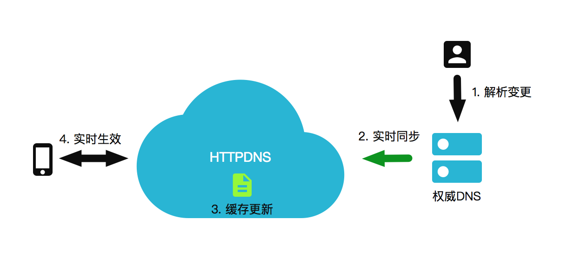

DNS优化实践
作为一次网络通信最前置的环节，域名解析的重要性不言而喻，在传统的基于浏览器的网站访问场景下，域名解析环节由浏览器内核实现，网站开发者无需关心域名解析的细节， 进入移动互联网时代，大量的应用基于C/S架构构建。相较于传统的面向浏览器的Web App，C/S架构的应用赋予了我们非常大的软件定制空间，开发者甚至可以渗透到整个应用的底层网络实现当中，域名解析环节的优化因此变为了可能。
域名解析的概念
在了解传统域名解析的流程之前，有几个专有名词我们需要了解一下：
根域、顶级域、二级域
DNS系统一般采用树状结构进行组织，以ru.wikipedia.org为例，org为顶级域名，wikipedia为二级域名，ru为三级域名，域名树状组织结构如下图所示。
图：域名结构

权威DNS
权威DNS即最终决定域名解析结果的服务器，开发者可以在权威DNS上配置、变更、删除具体域名的对应解析结果信息
递归DNS
递归DNS又称为Local DNS，它没有域名解析结果的决定权，但代理了用户向权威DNS获取域名解析结果的过程。递归DNS上有缓存模块，当目标域名存在缓存解析结果并且TTL未过期时（每个域名都有TTL时间，即有效生存时间，若域名解析结果缓存的时间超过TTL，需要重新向权威DNS获取解析结果），递归DNS会返回缓存结果，否则，递归DNS会一级一级地查询各个层级域名的权威DNS直至获取最终完整域名的解析结果
公共DNS
公共DNS是递归DNS的一种特例，它是一种全网开放的递归DNS服务，而传统的递归DNS信息一般由运营商分发给用户。一个比较典型的公共DNS即Google的8.8.8.8，我们可以通过在操作系统配置文件中配置公共DNS来代替Local DNS完成域名解析流程。
转发DNS
可以理解为递归DNS和用户之间的一个中转站，它不提供直接解析域名的服务，它将请求转发给递归DNS，然后将递归DNS的结果转发一下，也提供缓存作用。比如，日常家用的路由器，它的DNS服务器一般都是192.168.1.1，只是转发给递归DNS。
域名解析记录
图：DNS资源记录

记录一条域名信息映射关系，称之为资源记录（RR）, 当我们查询域名http://www.iq.com的时候，查询结果得到的资源记录结构体中有如下数据：
- TTL，就是生存周期，是递归服务器会在缓存中保存该资源记录的时长。
- 网络/协议类型，它的代表的标识是IN，IN就是internet，目前DNS系统主要支持的协议是IN。
- type，就是资源记录类型，一般的网站都是都是A记录（IPv4的主机地址）。
- rdata是资源记录数据，就是域名关联的信息数据。
查询域名设置 或者排查域名解析故障时，可以用nslookup命令查询一些域名的常用信息。
isno@isnodeMacBook-Pro ~ % nslookup www.iq.com
Server: 10.5.188.9
Address: 10.5.188.9#53
Non-authoritative answer:
www.iq.com canonical name = www.iq.akadns.net.
www.iq.akadns.net canonical name = api.iq.com.edgekey.net.
api.iq.com.edgekey.net canonical name = e36827.a.akamaiedge.net.
Name: e36827.a.akamaiedge.net
Address: 23.40.241.251
Name: e36827.a.akamaiedge.net
Address: 23.40.242.10
域名解析的过程
图：DNS解析过程

如上图所示，以访问www.iq.com为例，一次完整的域名解析流程包括：
- 终端向Local DNS发起域名解析请求；
- Local DNS在获取到域名解析请求后首先从Root hints获取根域名服务器的地址（Root hints包含了互联网DNS根服务器的地址信息）；
- 获取了根域名服务器地址后Local DNS向根域名服务器发起DNS解析请求，根域名服务器返回com顶级域名服务器地址；
- 随后Local DNS向com域名服务器发起解析请求，并得到iq.com二级域名服务器的地址；
- Local DNS向iq.com二级域名服务器发起解析请求，并最终获得了www.iq.com的IP地址信息；
- Local DNS将递归查询获得的IP地址信息缓存并返回给客户端；
以上的流程，也可使用dig命令来分析
[root@iZuf62dyu5wbcnaw1yfqyyZ ~]# dig www.iq.com
; <<>> DiG 9.11.4-P2-RedHat-9.11.4-26.P2.el7_9.10 <<>> www.iq.com
;; global options: +cmd
;; Got answer:
;; ->>HEADER<<- opcode: QUERY, status: NOERROR, id: 12339
;; flags: qr rd ra; QUERY: 1, ANSWER: 5, AUTHORITY: 0, ADDITIONAL: 0
;; QUESTION SECTION:
;www.iq.com. IN A
;; ANSWER SECTION:
www.iq.com. 600 IN CNAME www.iq.akadns.net.
www.iq.akadns.net. 60 IN CNAME api.iq.com.edgekey.net.
api.iq.com.edgekey.net. 21600 IN CNAME e36827.a.akamaiedge.net.
e36827.a.akamaiedge.net. 20 IN A 23.44.51.122
e36827.a.akamaiedge.net. 20 IN A 23.44.51.123
;; Query time: 2141 msec
;; SERVER: 100.100.2.136#53(100.100.2.136)
;; WHEN: 一 11月 28 15:10:26 CST 2022
;; MSG SIZE rcvd: 164
dig命令返回解析
dig返回内容的第一部分，主要包括dig的版本信息，以及本次命令执行结果的摘要 opcode：QUERY，表示执行查询操作。status：NOERROR。解析成功。
QUESTION SECTION
展示发起的DNS 请求参数。其中A表示我们默认查询A类型的记录。
ANSWER SECTION
这一部分展示DNS服务的响应流程，返回的内容为上面域名资源解析RR记录。从上面的结果中可以看到www.iq.com 最初是cname到www.iq.akadns.net.最后解析到 23.44.51.122，23.44.51.123 两个A记录。
传统DNS解析的问题
在了解以上传统域名解析流程后，再一起来探究一下传统域名解析存在的一系列问题：
延迟问题 DNS首次查询或缓存过期后的查询，需要递归遍历多个DNS服务器以获取最终的解析结果，这增加了网络请求的前置延时时间。特别是在移动互联网场景下，移动网络质量参差不齐，弱网环境的RTT时间可能高达数百毫秒。
域名劫持 在海外部分地区，存在很严重的域名劫持、污染的问题。这类缓存行为往往是间歇性、局部性发生的，没有明显的规律，导致开发者很难对其进行量化、评估、预防。
- 调度不精准 部分Local DNS供应商为了降低运营成本，会将域名解析请求转发给其他供应商的Local DNS节点，这类解析转发行为会严重影响域名解析的精准性并对用户业务访问延迟带来影响，特别是CDN的请求访问。
在部分东南亚国家这些问题，其中DNS解析时间P90的延迟在100~300ms+。
HTTPDNS
传统域名解析面临的诸多问题与挑战本质根源在于Local DNS的服务质量不可控，如果有一个更安全、稳定、高效的递归DNS服务帮助我们代理了域名解析的过程，上述问题看起来就可以彻底地得到解决。HTTPDNS在这样的背景下应运而生。
HTTPDNS解析原理
HTTPDNS的原理是原本用户进行 DNS 解析是向运营商的 DNS 服务器发起 UDP 报文进行查询，而在 HTTP DNS 下，修改为用户带上待查询的域名和本机 IP 地址直接向 HTTP 服务器发起 HTTP 请求，这个 HTTP 服务将返回域名解析后的IP地址。
图：HTTPDNS 运行原理

根据上面的运行原理，我们进一步看HTTPDNS如何解决传统DNS解析面临的问题的。
防域名劫持
HTTPDNS使用HTTP协议进行域名解析，代替现有基于UDP的DNS协议，域名解析请求直接发送到HTTPDNS服务端，从而绕过运营商的Local DNS，如下图所示。
图：HTTPDNS 防劫持
HTTPDNS代替了传统的LocalDNS完成递归解析的功能，基于HTTP协议的设计可以适用于几乎所有的网络环境，同时保留了鉴权、HTTPS等更高安全性的扩展能力，避免恶意攻击劫持行为。另一方面，商业化的HTTPDNS服务缓存管理有严格的SLA保障，避免了类似Local DNS的缓存污染的问题。
精准调度
传统域名解析的调度精准性问题，本质根源在于Local DNS的部署和分配机制上。由于碎片化的管理方式，这些环节的服务质量同样很难得到保障。HTTPDNS在递归解析实现上优化了与权威DNS的交互，通过edns-client-subnet协议（ https://datatracker.ietf.org/doc/rfc7871 ）将终端用户的IP信息直接交付给权威DNS，这样权威DNS就可以忽略Local DNS IP信息，根据终端用户的IP信息进行精准调度，避免Local DNS的坐标干扰。
图：HTTPDNS 精准调度

在DNS解析延迟方面，由于HTTPDNS基于HTTP协议，而HTTP基于TCP协议，对比传统的UDP传输多了一些冗余的握手环节，因此从原理上而言网络请求方面的开销并没有降低。但在实际使用过程中，我们可以通过端上的策略来实现一个零延迟DNS解析的方案。接下来我们一起来看看HTTPDNS服务在移动端的最佳实践方案。实时生效的流程如下图所示。
图：HTTPDNS 实时生效
HTTPDNS最佳实践
在 DNS 解析环节，DNS解析的耗时是一个重要的指标，LocalDNS在过期的情况下，会发起递归查询，这个时间是不可控，在部分情况下甚至能达到数秒级别； HTTPDNS 相对会好一些，但正常来看也会有100ms左右的耗时，那么在下面我们将与客户端一起协作，通过HTTPDNS服务，实现包括防止域名劫持、精准调度、实时解析生效等功能。
预解析
绝大多数的APP在应用初始化阶段都有一个启动期，我们可以在这个启动期做一些preflight工作，即在初始化阶段我们可以针对业务的热点域名在后台发起异步的HTTPDNS解析请求。这部分预解析结果在后续的业务请求中可以直接使用，进而消除首次业务请求的DNS解析开销，提升APP首页的加载速度。
智能缓存
通过预解析获取的IP有一定的TTL有效时间，我们需要合理地缓存下来进行管理。操作系统本身的DNS缓存粒度比较粗，在客户端我们可以应用更细粒度的缓存管理来提升解析效率。比如在不同的网络运营商环境下，对CDN域名的解析结果会发生变化，当我们使用电信WIFI时，DNS解析会返回就近的电信CDN节点IP，当我们使用联通3G时，DNS解析会返回就近的联通CDN节点IP，针对不同运营商的解析结果缓存可以确保我们在网络切换时能够快速地进行网络请求，减免DNS解析带来的额外开销。甚至更激进的，我们可以做本地的持久化缓存，当下一次APP启动时直接读取缓存用于网络访问，以提升首屏加载的速度。
懒加载
懒加载策略的实施可以让我们真正实现DNS的零延迟解析。所谓懒加载策略，核心的实现思路如下：
- 业务层的域名解析请求只和缓存进行交互，不实际发生网络解析请求。如果缓存中存在记录，不论过期与否，直接返回业务层缓存中的记录；
- 如果缓存中的记录已过期，后台发起异步网络请求进行HTTPDNS解析；
对于懒加载，这里会产生一个疑惑？返回一个过期的IP岂不是违背了TTL设计的初衷？ 的确，上述行为并不符合标准的规范，但是当我们重新审视一下自己的业务特点：绝大多数的业务场景下我们的后端IP是固定的若干个节点，因此连续的解析结果在环境不变的情况下有很大概率是保持一致的，这在一定程度上保证了懒加载的可行性。另一方面，即便我们由于返回过期IP导致了访问异常的行为，后台很快会进行新IP的异步解析和缓存更新，业务本身可以进行重试和快速的复原。再进一步TTL过期的IP的服务在绝大多数场景下还是持续的，可预期的，因此懒加载可能带来的业务风险是可控的。
下图描绘了预解析+懒加载的实现框架：

HTTPDNS接入问题
业内对HTTPDNS在实际业务中的接入方式多采用IP直连的形式，如原本请求api.iq.com,现为先调用SDK 进行域名解析，拿到IP 地址比如 3.3.3.3，然后替换域名为: http://3.3.3.3/ 这样操作之后， 由于URL中HOST已经是IP地址，网络请求库将跳过域名解析环节，直接向 3.3.3.3 服务器发起 HTTP请求。
如果是HTTP的请求，手动在Header补充中host即可完成，但如果是HTTPS呢？会碰到域名本地证书验证和HTTPS SIN问题。
证书验证问题
由于在 IP 直连下，我们给网络请求库的 URL 中 host 部分已经被替换成了 IP 地址，因此证书验证环节，这将导致 domain 检查不匹配，最终 SSL/TLS 握手失败。
解决 SSL/TLS 握手中域名校验问题的方法在于我们重新配置 HostnameVerifier, 让请求库用实际的域名去做域名校验，代码示例如下:
此示例针对HttpURLConnection接口
final URL htmlUrl = new URL("https://3.3.3.3/");
HttpsURLConnection connection = (HttpsURLConnection) htmlUrl.openConnection();
connection.setRequestProperty("Host","api.iq.com");
connection.setHostnameVerifier(new HostnameVerifier() {
@Override
public boolean verify(String hostname, SSLSession session) {
return HttpsURLConnection.getDefaultHostnameVerifier()
.verify("api.iq.com",session);
}
});
HTTPS SNI问题
SNI（Server Name Indication）是为了解决一个服务器使用多个域名和证书的 SSL/TLS 扩展. 和上面证书检验问题类似，网络请求库默认发送给服务端的 "要访问站点的域名" 就是我们替换后的 IP 地址。服务端在收到这样一个 IP 地址形式的域名找不到对应的证书，最后下发一个默认的域名证书。
接下来客户端在检验证书的 Domain 域时，服务端下发的证书无法对应域名，最后以 SSL/TLS 握手失败告终。解决此问题，需要客户端重新定制 SSLSocketFactory，在createSocket时替换为HTTPDNS的IP，并进行SNI/HostNameVerify配置，此流程代码较多，感兴趣的读者可以从以下网址查看具体的示例。
注意事项
- 设置的缓存TTL值不可太低（不可低于60s），防止频繁进行HtppDNS请求。
- 接入HttpDNS的业务需要保留用户本地LocalDNS作为容灾通道，当HttpDNS无法正常服务时（移动网络不稳定或HttpDNS服务出现问题），可以使用LocalDNS进行解析。
- https问题，需在客户端hook客户端检查证书的domain域和扩展域看是否包含本次请求的host的过程，将IP直接替换成原来的域名，再执行证书验证。或者忽略证书认证，类似于curl -k参数。
- HttpDNS请求建议超时时间2-5s左右。
- 在网络类型变化时，如4G切换到wifi，不同wifi间切换等，需要重新执行HttpDNS请求刷新本地缓存。